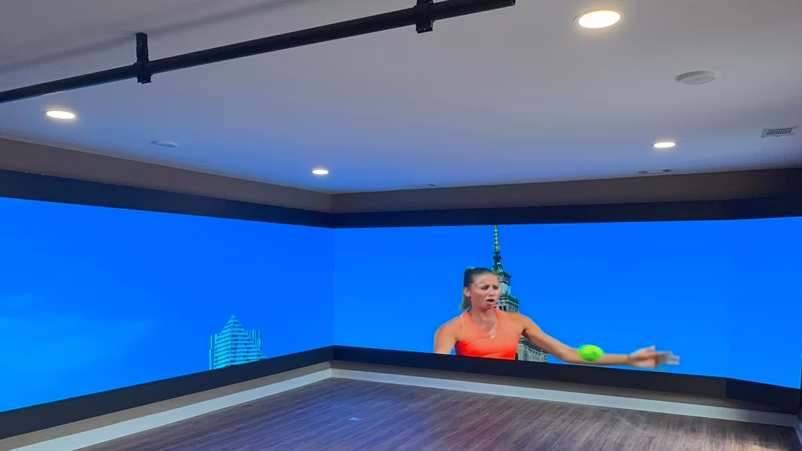

Importing LED displays into Europe is a compliance exercise before it is ever a logistics exercise. A container of screens that lacks the right conformity documentation can sit at a port while the buyer absorbs storage charges and missed installation dates. This guide walks through the certification frameworks that govern the EU, the UK and the German premium tier, then compares the shipping corridors that connect Shenzhen to European receivers.
Each market segment has its own legal basis and its own habits of enforcement. Understanding which mark is mandatory, which is voluntary but commercially decisive, and which paperwork a customs officer will actually ask for is what separates a smooth import from an expensive lesson.
The CE mark is the entry ticket for every EU member state, including Germany, France, the Netherlands, Italy, Spain and Poland. It is not a single test but a formal declaration that a product meets all directives that apply to it, backed by a technical file that must remain available to market surveillance authorities. For an LED display, four directive families usually apply at the same time, and a supplier that only mentions one of them is telling you the file is incomplete.
CE-EMC covers radiated and conducted emissions plus immunity, which matters because a large LED cabinet is full of switching power supplies and high-frequency driver ICs. CE-LVD applies to mains-powered equipment and concentrates on insulation, creepage distance, earthing and protection against electric shock. The ErP Directive sets power and standby consumption expectations and is policed more strictly in Germany than almost anywhere else in the bloc.
RoHS restricts lead, mercury, cadmium and other substances in the bill of materials, while WEEE places end-of-life take-back responsibility on the importer who first places the product on the market. Together they form the environmental half of the file. A supplier that cannot produce a WEEE registration and a RoHS report tied to the exact BOM will not survive a German customs audit.
Timelines run four to six weeks per directive family for a new product series, and the work is normally done once by the manufacturer so that every downstream importer benefits. Reusing an existing test report is legitimate only when the tested configuration matches the shipped configuration, so buyers should confirm that the report references the exact cabinet and module combination they are ordering.
Asia Vision products ship with CE documentation covering EMC, LVD, ErP, RoHS and WEEE, which means EU buyers receive a complete technical file rather than a single certificate scan. That file can be handed directly to a customs broker, a building inspector or an end client's compliance department without further translation work.
| Requirement | What It Covers | Applies To | Typical Timeline |
|---|---|---|---|
| CE-EMC | Electromagnetic compatibility: emissions and immunity | All mains and signal electronics | 4-6 weeks |
| CE-LVD | Low voltage safety: insulation, earthing, shock protection | Mains-powered equipment | 4-6 weeks |
| ErP Directive | Energy-related product power and standby limits | Displays sold in the EU, strictly enforced in Germany | 4-6 weeks |
| RoHS | Restriction of hazardous substances in the bill of materials | Every cabinet, module and cable | 2-4 weeks |
| WEEE | End-of-life take-back and recycling registration | Importers placing product on the EU market | 2-4 weeks |
Brexit separated the UK conformity regime from the EU one. UKCA, the UK Conformity Assessed mark, is now the designation for most products placed on the Great Britain market, and it is issued against designated standards that currently mirror the EU harmonised standards very closely. Northern Ireland follows a separate route and continues to accept CE, so importers serving both GB and NI need to plan the paperwork deliberately rather than assume one mark covers everything.
In content, a UKCA file looks almost identical to a CE file: electromagnetic compatibility, safety, and where relevant energy and substance requirements, tested to the same underlying standards. The difference is procedural. The assessment must be made against UK designated standards and, where a third party is involved, by a UK-approved body rather than an EU notified body. That distinction is easy to overlook when a factory offers a generic test report.
Labelling is the second practical difference. The UKCA mark must appear on the product, the packaging, or an accompanying document, together with the name and UK address of the importer who places it on the market. Many factories print only the CE logo and an EU representative address, which leaves the UK distributor legally exposed even though the product itself is sound.
Asia Vision products carry both CE and UKCA conformity, so a single production batch can serve the EU and the UK without modification. For a distributor selling across the Channel this dual marking is the most economical arrangement, because it removes the need to hold separate, market-specific stock and simplifies the customs story at both ends of the journey.
The GS mark, short for Geprufte Sicherheit, is a voluntary German safety mark issued by recognised bodies such as TUV Rheinland, TUV SUD and VDE. It is not required by law, yet it carries real commercial weight because German corporate buyers, public institutions and system integrators routinely write GS into their tender specifications. In those tenders the mark is not a nice extra; it is the difference between being considered and being excluded.
The GS process reaches further than a CE self-declaration. It requires third-party type testing of a physical sample, an initial factory inspection, and annual follow-up audits of the production line to confirm that the tested design is still the design being shipped. That continuous scrutiny is precisely why procurement departments trust it: the mark is maintained over time rather than issued once and forgotten.
Testing for LED displays concentrates on electrical safety, mechanical stability, cabinet edge and corner safety, fire behaviour of plastics, and thermal performance under continuous operation. For rental or outdoor series the auditor also examines IP sealing, mounting hardware and the integrity of the power distribution inside the cabinet. Buyers who need GS should confirm the certificate names the specific cabinet model, not a related range that merely shares a housing.
Because GS adds test cost and recurring audit obligations, it makes the most sense for products aimed at premium German distribution or public-sector tenders. Where a project does not demand it, a complete CE file is normally sufficient. Where a tender explicitly lists GS, however, the mark becomes a pass-or-fail condition that no amount of competitive pricing can offset.
A buyer who normally imports into Europe and is now purchasing for a US project should expect the documentation to change, because the requirements are administered separately.
Three differences matter. Certification: CE and the European conformity route apply in the EU, while a US project looks for equipment authorisation and, where a building code applies, a listing. A European declaration does not evidence a US requirement. Customs procedure: a European entry is made in a single member state and the goods circulate, while a US entry is made per arrival with its own duty assessment and its own record-keeping obligation on the importer of record. Origin conditions: certain European and US public funding carries origin requirements, and they are defined separately, so a product acceptable under one may not satisfy the other.
Two practical points. Build the US documentation file separately from the European one rather than reusing it, because the two are asked for in different terms. And confirm the origin condition at the specification stage on either side, not after the award.
Physical logistics into Europe splits into several working corridors, each balancing transit time, onward reach and the depth of available customs expertise. Most LED cabinets travel as standard freight in 40-foot high-cube containers, packed in flight cases or on reinforced pallets depending on the series. Rental cabinets, being designed for repeated transport, are usually the simplest to consolidate.
Germany-bound freight typically lands at Hamburg or Bremerhaven and then moves by truck into central Europe. This is the busiest corridor and the one with the deepest pool of brokers who understand display hardware classification. UK-bound freight usually lands at Felixstowe, Southampton or London Gateway, where post-Brexit clearance now happens at the port and requires a valid UK EORI number plus a correctly valued commercial invoice.
Rotterdam remains the preferred gateway for mainland distribution because its feeder network reaches France, Belgium and the Netherlands quickly and then continues onward to southern Europe. Choosing a port is as much about the receiver's warehouse location and inland trucking cost as it is about the sailing schedule itself, so buyers should compare total door-to-door time rather than port-to-port transit alone.
Documentation travels with the goods, not ahead of them, and this is where many first shipments stumble. The commercial invoice, packing list, bill of lading and certificate of origin must agree on description, quantity and value, because an inconsistency between documents is the single most common reason a container is held for inspection. Importers should review the draft set from the supplier before the vessel departs and correct mismatches while the goods are still at sea, when a fix costs a phone call rather than a demurrage charge.
It also helps to understand who is responsible for what at each stage. Under a typical FOB arrangement the buyer takes control once the goods are loaded at the port of origin, which means freight booking, insurance and destination clearance all fall to the importer. Under delivered terms the supplier manages more of the chain. Neither is inherently better, but the choice determines the importer's exposure and should be agreed in writing before the order is confirmed rather than assumed afterwards. On a first European shipment, many importers use a freight forwarder who can handle the origin, sea leg and destination clearance as a single service, which removes the risk of gaps between handovers.
Finally, plan for the customs paperwork a European installation will eventually require. Building projects in Germany, France and the Netherlands often ask the installer for conformity evidence before a screen is switched on, and the importer who can produce the CE technical file on demand avoids holding up a project that is already behind schedule.
| Destination | Primary Route | Transit Time | Best For |
|---|---|---|---|
| Germany | Shenzhen to Hamburg / Bremerhaven | 25-30 days | Central European distribution, mature broker network |
| United Kingdom | Shenzhen to Felixstowe / Southampton | 28-32 days | GB delivery with port-side customs clearance |
| Mainland EU | Shenzhen to Rotterdam | 22-28 days | Benelux and France, feeder links to southern Europe |
| Southern EU | Shenzhen to Genoa / Valencia | 26-32 days | Italy, Spain and Mediterranean project sites |
Product documentation is supplied per series; the LED display series overview lists cabinet configurations, weights and packing data for import planning.
Related reading: LED Display Church Worship Guide for Congregations 2026
Related reading: LED Display for Broadcast Studios and Virtual Production: Complete Gui
Get CE/UKCA certified pricing with Hamburg or Felixstowe delivery.
Request European Import QuoteChat on WhatsApp